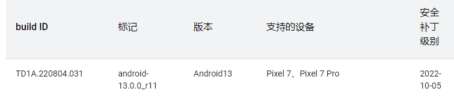
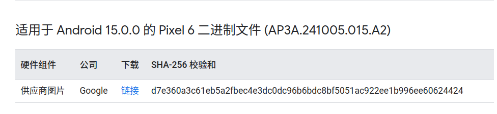
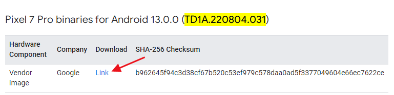

环境搭建
1.安装ubuntu系统（22.04）¶
磁盘大小越大越好，至少500G
| 优缺点 方式 | VMWare方式 | WSL2方式 | Windows11安装Ubuntu |
|---|---|---|---|
| 优点 | 有图形化界面可以直接启动模拟器(需关闭hyper-v) | 编译速度快，占用体积小，方便和windows之间操作 | 编译速度快，独立系统，可使用模拟器，源码在window下也可访问 |
| 缺点 | 不流畅，编译速度慢，占用体积大，不能同时使用Android子系统 | 无图形化界面，网络独立不方便使用vpn，无法使用模拟器 | 系统占用空间，和window交互不便 |
2.下载Android源码镜像包(可跳过)¶
磁盘空间小可使用传统方式下载源码
在ubuntu系统中打开终端，执行命令：wget -c 地址如下
https://mirrors.ustc.edu.cn/aosp-monthly/aosp-latest.tar 或者 https://mirrors.tuna.tsinghua.edu.cn/aosp-monthly/aosp-latest.tar
文件大概80GB
校验：md5sum aosp-latest.tar (较慢)
解压：tar xvf aosp-latest.tar (较慢)
解压后得到目录aosp
注：报错尝试使用
wget -U NoSuchBrowser/1.0 下载地址
3.安装git和repo¶
安装git
sudo apt install git
git config --global user.email 1875287386@qq.com
git config --global user.name "yuli"
安装repo
echo "PATH=~/bin:\$PATH" >> ~/.bashrc
source ~/.bashrc
sudo apt install curl
mkdir ~/bin
curl -sSL 'https://gerrit-googlesource.proxy.ustclug.org/git-repo/+/master/repo?format=TEXT' |base64 -d > ~/bin/repo
chmod +x ~/bin/repo
export REPO_URL='https://mirrors.tuna.tsinghua.edu.cn/git/git-repo'
python快捷键创建
sudo ln -s /usr/bin/python3.10 /usr/bin/python
4.同步Android源码¶
查看Android系统源码的网址
AOSP最新在线源码(需vpn) https://cs.android.com/android/platform/superproject/main
9.0之前：http://androidxref.com
5.0-14.0+:
进入目录aosp执行
repo init -u https://mirrors.tuna.tsinghua.edu.cn/git/AOSP/platform/manifest -b android-15.0.0_r3
https://source.android.com/setup/start/build-numbers?hl=zh_cn(挂vpn)
https://source.android.google.cn/docs/setup/reference/build-numbers?hl=zh-cn
Pixel6: AP3A.241005.015.A2对应分支android-15.0.0_r3
aosp14最后一个版本：AP2A.240905.003.F1 android-14.0.0_r73
aosp14转折性版本：AP1A.240305.019.A1 android-14.0.0_r29
添加交换内存¶
- zram
安装
sudo apt-get install zram-config
sudo systemctl enable zram-config
sudo systemctl start zram-config
sudo zramctl
sudo systemctl stop zram-config
sudo systemctl disable zram-config
如果已经存在swapfile，先关闭
sudo swapoff /swapfile
sudo rm -rf /swapfile
sudo dd if=/dev/zero of=/swapfile bs=1G count=20
sudo mkswap /swapfile
sudo swapon /swapfile
/swapfile none swap sw 0 0
使用传统同步代码¶
在执行repo init xxx后为节省空间，编辑.repo/manifests.git/config
在[remote "origin"]节点下添加
[remote "origin"]
//..
depth = 1
no-tags = true
同步代码¶
较慢
repo sync -c -j20
安装依赖¶
安装jdk
sudo apt install openjdk-11-jre-headless
sudo apt-get install git-core gnupg flex bison gperf build-essential zip curl zlib1g-dev gcc-multilib g++-multilib libc6-dev-i386 lib32ncurses5-dev x11proto-core-dev libx11-dev lib32z-dev libgl1-mesa-dev libxml2-utils xsltproc unzip
提升编译¶
交换内存控制，重启生效
sudo vi /etc/sysctl.conf
vm.swappiness=70
查看命令
cat /proc/sys/vm/swappiness
vi ~/.bashrc
#添加以下内容
export USE_CCACHE=1
export CCACHE_COMPRESS=1
export LC_ALL=C
export _JAVA_OPTIONS="-Xmx6g"
ccache -M 50G
5.驱动下载(针对google手机，可跳过)¶
https://developers.google.com/android/drivers

上面源码下载的是android-15.0.0_r3所以复制build ID(AP3A.241005.015.A2)到驱动网站

下载后放到aosp目录下并解压
tar -zxvf google_devices-cheetah-td1a.220804.031-d59f7f42.tgz
./extract-google_devices-cheetah.sh
获得一个vendor文件夹，确保在aosp目录下
6.内核下载(可跳过)¶
https://source.android.google.cn/docs/setup/build/building-kernels?hl=zh-cn#id-version

一般已经包含，可通过路径确认
7.源码编译¶
export DISABLE_ARTIFACT_PATH_REQUIREMENTS="true"
source build/envsetup.sh
aosp12之前¶
模拟器：
lunch aosp_x86_64-eng
aosp12-14r29¶
lunch后会列出编译选项
模拟器：
lunch sdk_phone_x86_64
如果是真机代号，比如Pixel6 ("oriole")
lunch aosp_oriole-userdebug
- user:无root权限
- userdebug:有root，需要通过su获取
- eng:有root，adbd超级权限，编译更快，推荐开发使用
添加lunch选项¶
对于模拟器必须sdk开头，比如lunch sdk_phone_x86_64-userdebug
打开build/make/target/product/AndroidProducts.mk
COMMON_LUNCH_CHOICES := \
...
sdk_x86_64-eng \
sdk_phone_x86_64-eng \
sdk_x86_64-userdebug \
sdk_phone_x86_64-userdebug
aosp14r29之后¶
模拟器：
sdk_phone64_x86_64-ap2a-eng //手机
sdk_car_x86_64-ap2a-userdebug //车机
Pixel6
aosp_oriole-ap2a-eng
aosp15¶
lunch product_name-release-build_variant
模拟器：
lunch sdk_phone64_x86_64-trunk_staging-eng
lunch aosp_oriole-trunk_staging-eng
cat: device/google/raviole-kernels/5.10/trunk-11969182/vendor_boot.modules.load: 没有那个文件或目录
In file included from build/make/core/config.mk:381:
In file included from build/make/core/envsetup.mk:368:
In file included from build/make/core/board_config.mk:241:
In file included from device/google/raviole/oriole/BoardConfig.mk:46:
device/google/gs101/BoardConfig-common.mk:371: error: vendor_boot.modules.load not found or empty.
cd device/google/raviole-kernels/5.10/
git ch -b master
git branch --set-upstream-to=aosp/master master
git pull
模拟器修改分辨率
out/target/product/emu64x/config.ini，修改成
hw.lcd.density=420
skin.name=1080x2400
skin.path=1080x2400
编译以及命令相关¶
Car API相关¶
即编译和CarService通信的接口库
make android.car 可看到所有方法接口，包括具体实现
make android.car-system-stubs 可看到所有方法接口但不含具体实现
make android.car-stubs 仅包含没有被@SystemApi修饰的方法，且不含具体实现
成功后jar在out\soong.intermediates\packages\services\Car\car-lib\android.car\android_common\javac\
pixel手机刷入车载系统
https://source.android.com/docs/automotive/start/pixelxl?hl=zh-cn
8.刷机(可跳过)¶
谷歌原生手机地址：
线刷包：https://developers.google.com/android/images
OTA包：https://developers.google.com/android/ota
刷机编译的包¶
解锁设备
fastboot flashing unlock
音量键选择Unlock
echo $ANDROID_PRODUCT_OUT
fastboot flashall -w
其他命令
b分区相关
fastboot set_active other
fastboot --slot=other flash bootloader bootloader.img
wifi感叹号处理¶
adb shell settings delete global captive_portal_http_url
adb shell settings delete global captive_portal_https_url
adb shell settings put global captive_portal_http_url http://www.google.cn/generate_204
adb shell settings put global captive_portal_https_url https://www.google.cn/generate_204
9.启动模拟器¶
1.vmware中，源码编译完后直接执行emulator即可
2.如果是wsl2中，由于无法启动模拟器，需要借助window中的emulator.exe，前提是已经安装好Android Studio并且创建了一个模拟器名为Pixel5，模拟器处于关闭状态，然后执行命令启动模拟器
emulator.exe -avd Pixel5 -system "\wsl.localhost\Ubuntu-22.04\home\yuli\aosp\out\target\product\emulator_x86_64\system.img" -data "\wsl.localhost\Ubuntu-22.04\home\yuli\aosp\out\target\product\emulator_x86_64\userdata.img"
-system：指定编译出来的system.img镜像
-data：指定编译出来的userdata.img镜像
3.ubuntu系统中直接执行emulator -writable-system
adb root
adb remount
adb reboot
10.源码导入AS(通用)¶
生成idegen.jar
source build/envsetup.sh
mmm development/tools/idegen/
development/tools/idegen/idegen.sh
sudo chmod 777 android.iml
sudo chmod 777 android.ipr
添加排除名单(android.iml)
<excludeFolder url="file://$MODULE_DIR$/bionic" />
<excludeFolder url="file://$MODULE_DIR$/bootable" />
<excludeFolder url="file://$MODULE_DIR$/build" />
<excludeFolder url="file://$MODULE_DIR$/cts" />
<excludeFolder url="file://$MODULE_DIR$/dalvik" />
<excludeFolder url="file://$MODULE_DIR$/developers" />
<excludeFolder url="file://$MODULE_DIR$/development" />
<excludeFolder url="file://$MODULE_DIR$/device" />
<excludeFolder url="file://$MODULE_DIR$/docs" />
<excludeFolder url="file://$MODULE_DIR$/external" />
<excludeFolder url="file://$MODULE_DIR$/hardware" />
<excludeFolder url="file://$MODULE_DIR$/kernel" />
<excludeFolder url="file://$MODULE_DIR$/out" />
<excludeFolder url="file://$MODULE_DIR$/pdk" />
<excludeFolder url="file://$MODULE_DIR$/platform_testing" />
<excludeFolder url="file://$MODULE_DIR$/prebuilts" />
<excludeFolder url="file://$MODULE_DIR$/sdk" />
<excludeFolder url="file://$MODULE_DIR$/system" />
<excludeFolder url="file://$MODULE_DIR$/test" />
<excludeFolder url="file://$MODULE_DIR$/toolchain" />
<excludeFolder url="file://$MODULE_DIR$/tools" />
报异常：
External file changes sync may be slow: The current inotify(7) watch limit is too low.
解决：
sudo touch /etc/sysctl.d/idea.conf
fs.inotify.max_user_watches = 524288
sudo sysctl -p --system
11.源码导入ASFP(Linux专用)¶
下载安装包：
https://dl.google.com/android/asfp/asfp-2023.1.1.19-linux.deb
https://dl.google.com/android/asfp/asfp-2023.2.1.19-linux.deb
使用教程：
https://juejin.cn/post/7316927971095576630
12.AIDEGen导入源码¶
配置as路径
vi ~/.bashrc
export ANDROID_HOME=/opt/android-studio-for-platform
export PATH=$PATH:$ANDROID_HOME/bin
13.源码仓库本地管理¶
1.移动硬盘/本地其他文件夹作为远程仓库
如果是移动硬盘，挂载目录：/media/xxx/xxx/
如果是本地其他文件夹，目录：/xxx/xxx
新建目录如aosp，初始化裸仓库
cd aosp
git init --bare
2.本地aosp源码
删除.repo/
git init
git checkout -b my-branch
echo "Initial commit" > README.md
git add README.md
git commit -m "Initial commit"
git remote add xxx(远程仓库名随意) /media/xxx/xxx/aosp
git remote -v
xxx /media/xxx/xxx/aosp/ (fetch)
xxx /media/xxx/xxx/aosp/ (push)
git push --set-upstream xxx my-branch